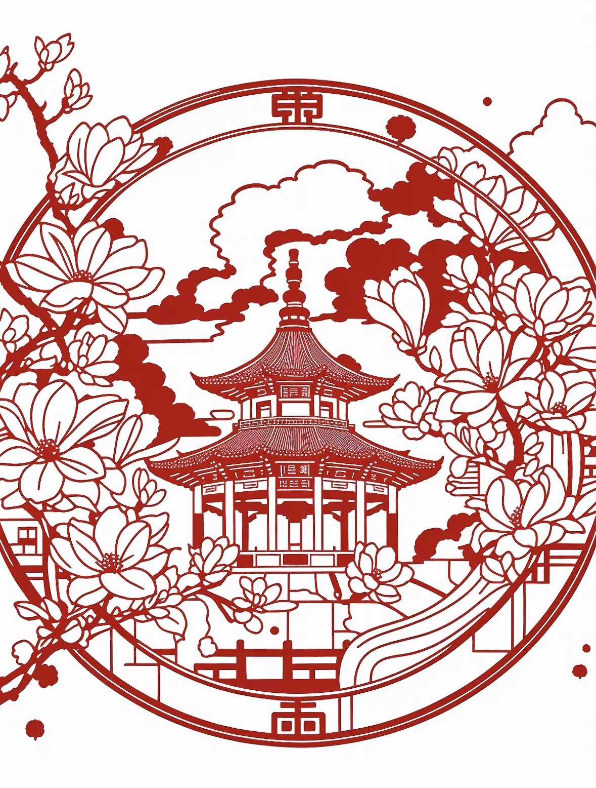
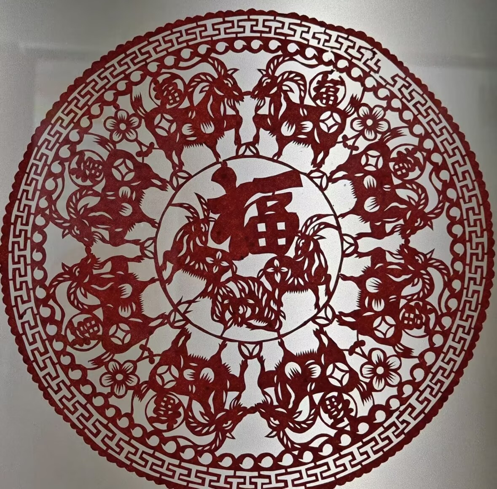
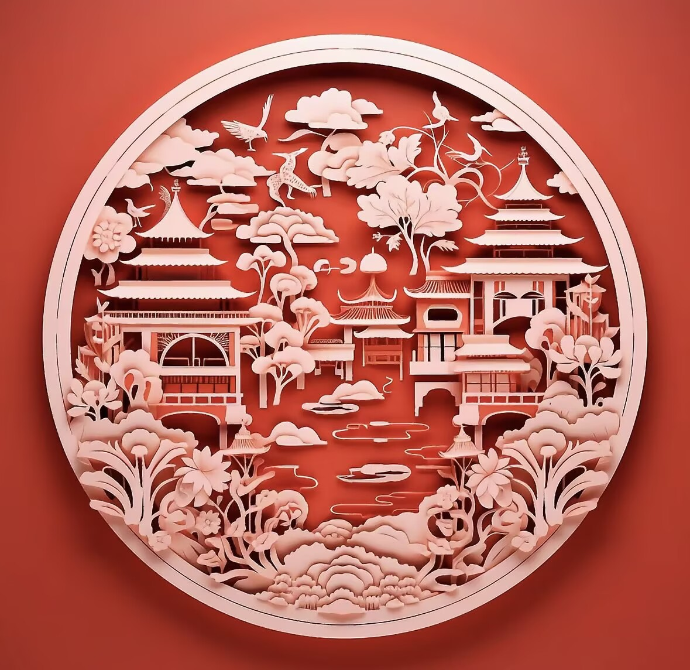
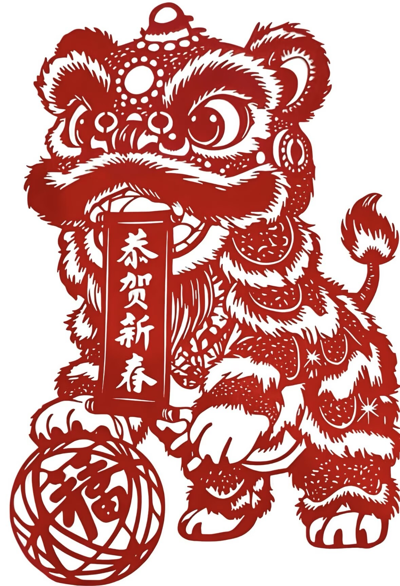
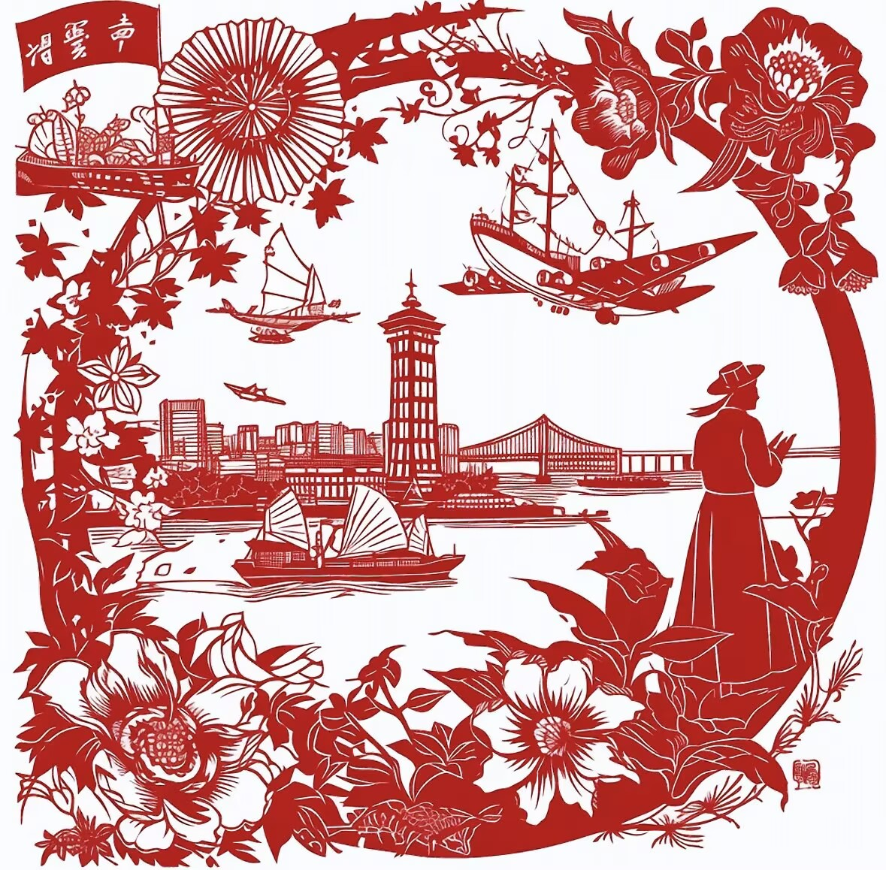

河北蔚县剪纸始于明代，是中国独一无二的“以刻代剪”彩色剪纸艺术，2006年被列入第一批国家级非物质文化遗产名录。
它起源于农家窗花，兴盛于民间民俗，历经数百年传承发展，成为中国民间美术中极具代表性的艺术瑰宝，也是北方民俗文化最直观的视觉表达。
【画稿】匠人手工绘制戏曲、花鸟、人物等图案，构图精巧、寓意吉祥。
【刻制】使用特制刻刀在多层宣纸上雕刻，线条细如发丝，刀法干净利落。
【点染】采用天然矿物颜料手工上色，色彩鲜艳、层次丰富。
【装裱】整理压平，制作成窗花、挂画、文创等多种形式作品。
如今，蔚县剪纸已走出传统窗花的局限，成为文创设计、艺术展览、校园教育的重要载体。
越来越多的年轻人加入传承行列，用现代设计语言重新演绎传统纹样，让这门古老的民间艺术在新时代焕发出全新的生命力。
一把刻刀、一张宣纸、一抹色彩，传承的是文化，留住的是乡愁。
本视频由蔚县非遗传承人亲自示范教学，从工具准备、基础刀法到简单图案制作，一步步带你体验传统剪纸的魅力。
只需准备刻刀、宣纸、颜料，在家就能轻松学习，感受非遗文化的乐趣。




